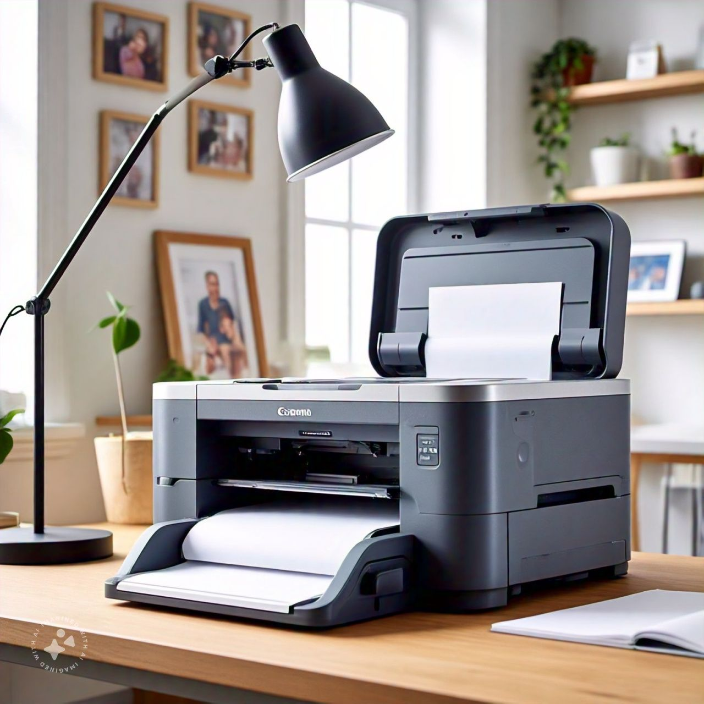
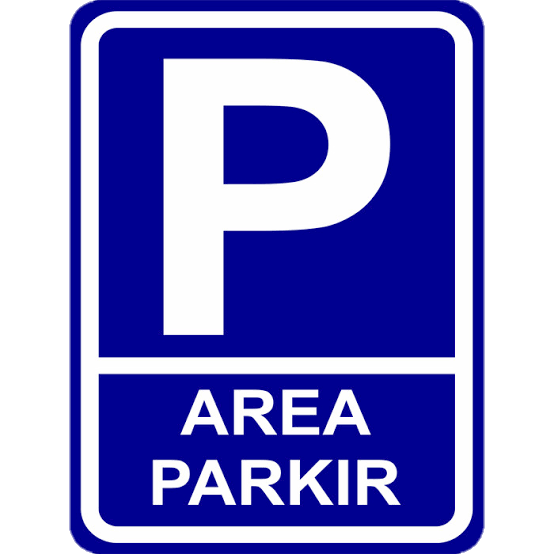
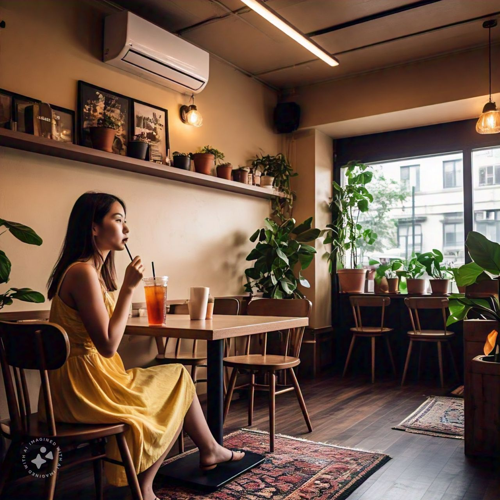

Fasilitas Kafe Koma
Kafe Koma menyediakan berbagai fasilitas untuk memastikan kenyamanan dan kepuasan pengunjung kami:
-
Wi-Fi Gratis: Nikmati akses internet cepat di seluruh
area kafe.

-
Tempat Duduk Nyaman: Pilihan tempat duduk yang
nyaman, baik di dalam maupun di luar ruangan.

- Printer: Bebas menggunakan printer. 
- Area Parkir: Tersedia area parkir yang luas dan aman untuk kendaraan Anda. 
- Ruangan Ber-AC: Nikmati ruangan ber-AC tanpa asap rokok. 
-
Ruangan Outdoor: Di kafe ini juga ada ruangan outdoor
di lantai 2 untuk melihat sunset di sore hari.